REDIA
Reunião Diária bordo × baseSistema de consolidação e apresentação · versão 1.4 · piloto de testes
Por que um sistema
A REDIA nivela bordo e base todos os dias
- Informação pulverizada: BDO, SITOP, PFCEO, APLAT, eplab, passagens de turno e planilhas, em sistemas e diretórios diferentes.
- Material sem padrão: cada FPSO monta o seu em PowerPoint, Excel ou PDF, preenchido à mão por coordenação.
- Janela curta: o BDO fecha entre 03:00 e 04:00 e a reunião começa às 08:45.
- Abertura decisiva: o GEOP tem agenda concorrida e nem sempre fica a reunião toda. O essencial precisa aparecer nos primeiros minutos.
- Leitura à distância: duas TVs de 75" por sala, via Teams. O que vai para a tela precisa ser lido em segundos.
- Bordo executa, base processa: o sistema tem de reduzir o trabalho de bordo, nunca aumentar.
Janela de tempo
O dia da REDIA, das 03:00 às 10:00
Horários configuráveis por UEP na tela Configuração. O app mostra a fase atual no cabeçalho e na tela Início.
Como funciona
Do turno à ata em quatro camadas
Coleta
"Capturar dados" em cada bloco busca BDO, SITOP, PFCEO, APLAT, eplab e a passagem de serviço; as sugestões chegam das duas passagens de turno.
O que a captura não encontra vira alerta para digitar. A origem fica sempre visível.
Curadoria
GEPLAT, COPROD, COEMB e COMAN revisam, aprovam, escrevem destaques e concluem o preenchimento.
O muito importante, e até 2 sistemas do PFCEO por coordenação, vão também para a abertura.
Apresentação
Cinco blocos 16:9 montados com o que foi aprovado, com semáforo padronizado e referência em cada valor.
Clique no título de um card para abrir o detalhe.
Ata
Pauta congelada, demandas base ↔ bordo, decisões e a transcrição do Teams, arquivados.
PDF da pauta pela impressão do navegador.
Papéis
Quem faz o quê
| Quem | No sistema | Quando |
|---|---|---|
| Supervisores | Sugerem itens para a REDIA na passagem de turno (SUPROD, SUEMB, SUEIN, SUMEC e os técnicos que reportam ao GEPLAT) | Passagens das 18:00 (D-1) e das 06:00 |
| COPROD · COEMB · COMAN | Capturam e conferem os dados, aprovam ou recusam sugestões, criam destaques, ajustam o PFCEO e os serviços do dia, registram tópicos no Canal Base x Bordo e concluem o preenchimento | Até 08:10, ajustes nas pré-REDIAs |
| GEPLAT | Situação da unidade e pauta extra; vê quem concluiu; notifica, congela e descongela a pauta; abre a reunião; fecha a ata | 08:40 congela · 08:45 abre |
| Base | Acompanha a curadoria, comenta itens antes da aprovação, registra e cobra demandas | Pré-REDIAs e reunião |
Curadoria
Cada coordenação decide o que vai para a tela
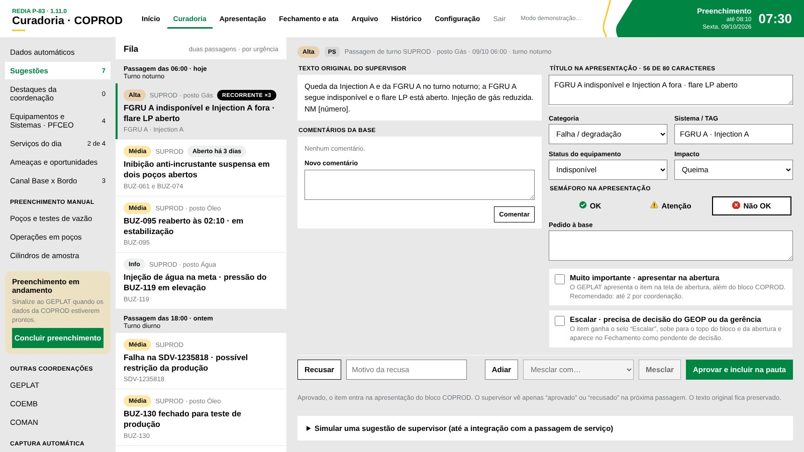
Curadoria COPROD · fila das duas passagens à esquerda, editor do item à direita- Fila com as passagens das 06:00 e das 18:00, por urgência, com "aberto há N dias".
- Editor com o texto original do supervisor ao lado. O coordenador ajusta título, TAG, impacto, semáforo e o pedido à base.
- Muito importante: o item também entra na abertura do GEPLAT.
- Concluir preenchimento avisa o GEPLAT que a coordenação está pronta.
Regras de dados
Todo valor com origem e referência
Acapturado (BDO, SITOP, PFCEO, eplab, passagem de serviço, metas)
Mdigitado: grava ao sair do campo, com nome e hora
Cescrito pela coordenação
PSsugerido na passagem de turno
PTserviço do planejamento (APLAT)
OK Atenção Não OK Sem dado
Cor, símbolo e texto sempre juntos. Zero é dado; só a ausência é "Sem dado".
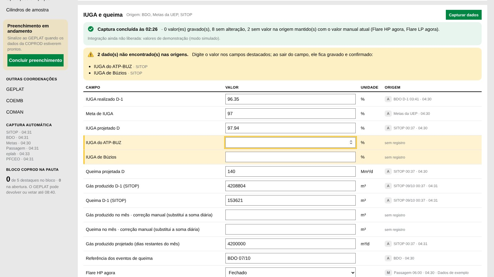
Dados automáticos · "Capturar dados" por bloco, com o que não foi encontrado em destaque. Sem botão Salvar: o valor digitado grava ao sair do campo.
Coleta
Um clique captura os dados de cada bloco
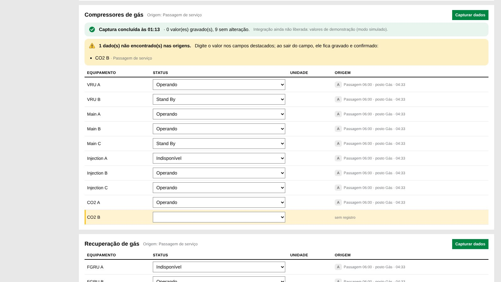
Compressores de gás · status de cada equipamento trazido da passagem de serviço; o que faltou fica em destaque- Capturar dados em cada bloco: barra de progresso e etapas por sistema (BDO, SITOP, metas, PFCEO, APLAT, eplab, passagem de serviço).
- O que é encontrado entra confirmado (A). O que falta vira alerta e o campo fica destacado até alguém digitar.
- Equipamentos: uma linha por compressor, unidade de recuperação e bomba, com status Operando, Stand By, Em manutenção, Indisponível ou Limitado.
- Serviços do dia: as PTs planejadas no APLAT entram na lista da coordenação sem repetir as já listadas.
- Hoje os conectores rodam em modo simulado, com dados de exemplo, até a liberação das integrações.
Equipamentos e Sistemas – PFCEO
Os desvios vão sozinhos para a tela
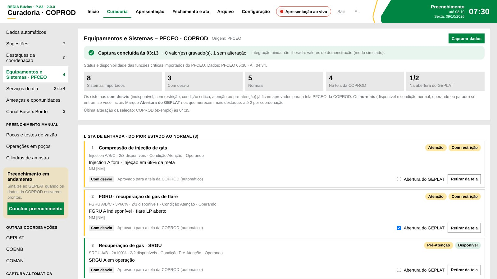
PFCEO na curadoria da COPROD · lista de entrada do pior estado ao normal, com contagem por situação- A captura importa o PFCEO e monta a lista de entrada, do pior estado até o normal (operando ou parado).
- Sistemas com desvio (indisponível, com restrição, atenção) já ficam aprovados para a tela PFCEO da coordenação.
- Sistemas normais só entram se o coordenador incluir.
- Até 2 por coordenação vão para a abertura do GEPLAT, em Destaques e ameaças.
Apresentação
Cinco blocos, um por vez, na ordem da reunião
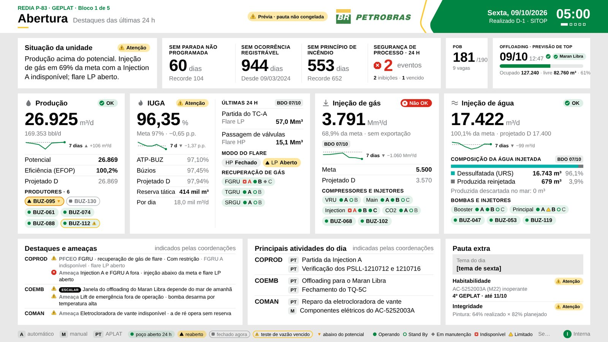
Bloco 1 · Abertura do GEPLAT: situação da unidade, SMS, POB, offloading, produção, IUGA, injeção com o status de cada equipamento, destaques (inclusive do PFCEO) e atividades do dia| 1 | Abertura · GEPLAT |
| 2 | Produção · COPROD |
| 3 | Embarcação · COEMB |
| 4 | Manutenção · COMAN |
| 5 | Fechamento: demandas, ata e retorno às passagens |
Tela 16:9 legível a 4 m nas TVs de 75". Setas ou números trocam o bloco; espaço controla o cronômetro de cada coordenação; F abre em tela cheia.
Blocos 2, 3 e 4
Mesmo desenho para as três coordenações
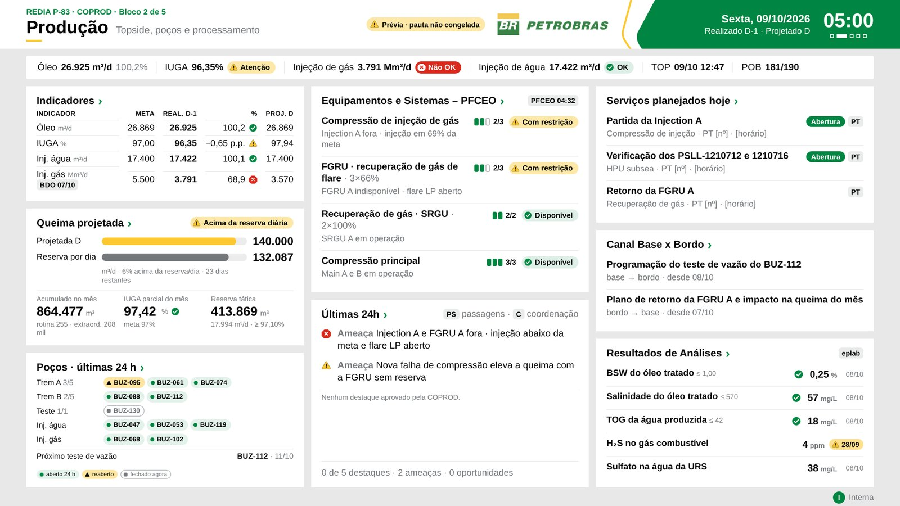
Bloco 2 · COPROD com dados de exemploIndicadores da coordenação: meta, realizado D-1, %, projetado D. Na COPROD: queima projetada e poços.
Equipamentos e Sistemas · PFCEO: os sistemas com desvio, piores primeiro, e Últimas 24h.
Serviços planejados hoje (PTs do APLAT), Canal Base x Bordo e Resultados de análises do eplab, com a data em destaque quando atrasada.
Detalhe por assunto
Clique no título do card para aprofundar
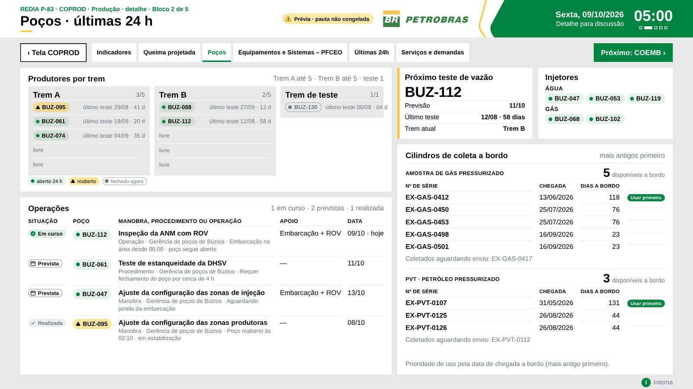
Poços · produtores por trem, próximo teste de vazão, injetores, operações em poços e cilindros de amostra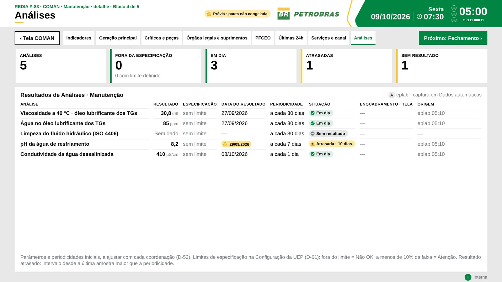
Análises · último resultado do eplab, data e periodicidade; atrasadas em destaqueCada detalhe tem "Tela COPROD/COEMB/COMAN" para voltar e "Próximo" para seguir para a coordenação seguinte. Esc também volta.
08:40
Pauta congelada é a versão oficial
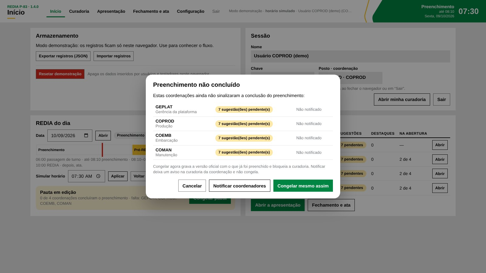
Ao congelar com coordenação pendente: cancelar, notificar o coordenador ou congelar mesmo assim- Congelar guarda uma cópia fiel da pauta com código de integridade. A apresentação passa a mostrar essa cópia.
- A curadoria fica bloqueada para todos. Na versão web a própria base de dados recusa alterações, mesmo de quem estava com a tela aberta.
- Demandas, anexos e ata continuam liberados.
- Descongelar exige motivo e fica registrado.
Depois das 10:00
Demandas rastreáveis e ata em PDF
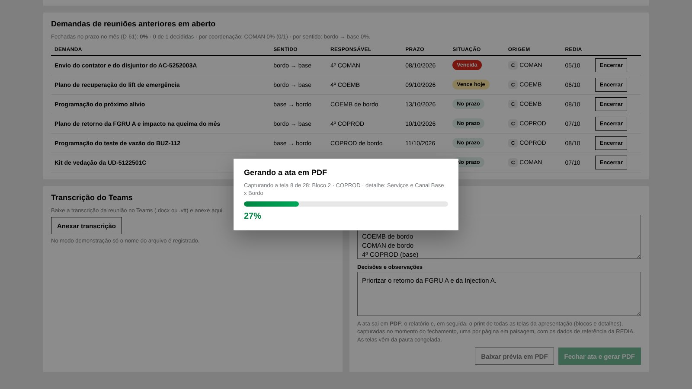
Fechar ata e gerar PDF · o app captura cada tela da apresentação e mostra o progresso- Demandas base ↔ bordo (Canal Base x Bordo) com responsável, prazo e situação (no prazo, vence hoje, vencida). Ficam abertas de um dia para o outro.
- Transcrição do Teams anexada (.docx ou .vtt).
- Ata em PDF: relatório com participantes, situação, indicadores, destaques, demandas e decisões, seguido do print de todas as telas da apresentação.
- Na base compartilhada, o PDF fica gravado nos arquivos da REDIA; "Baixar prévia em PDF" confere antes, sem registrar.
Registro
A ata leva o relatório e as telas da reunião
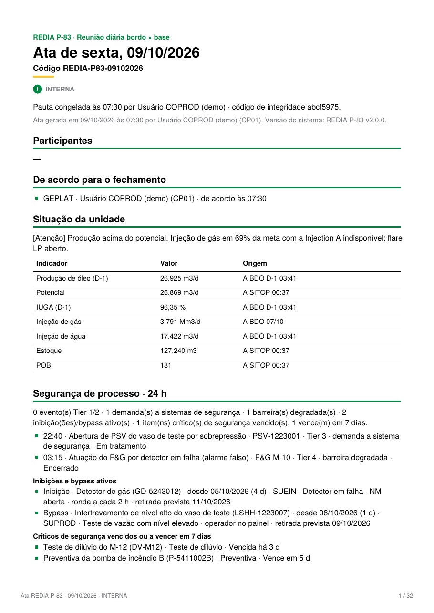
Relatório em retrato · texto pesquisável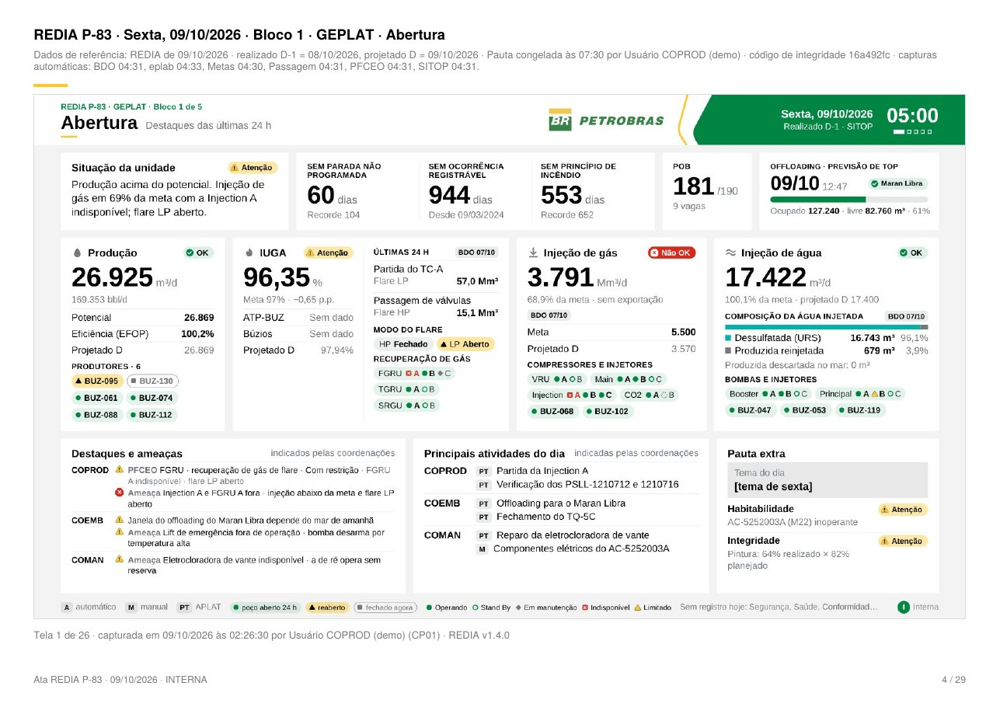
Uma página em paisagem por tela (blocos e detalhes), com os dados de referência- Telas capturadas no fechamento, a partir da pauta congelada.
- Em cada página: data da REDIA, D-1 e D, código de integridade, horário das capturas, quem gerou e quando.
Em campo
Preparar a REDIA pelo tablet ou celular
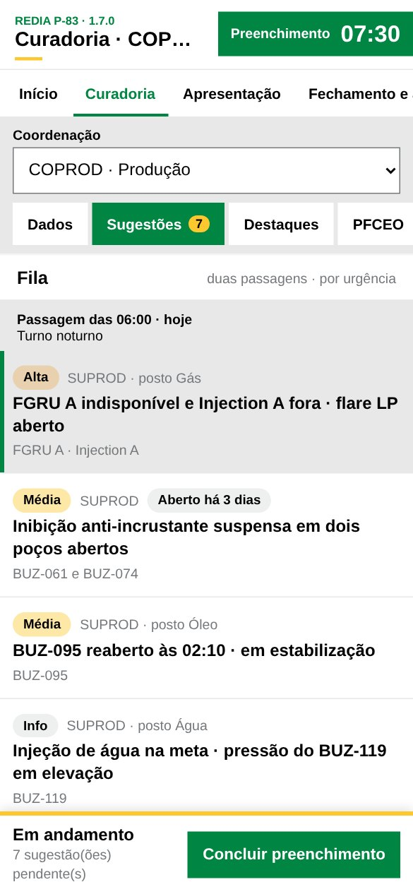
Fila de sugestões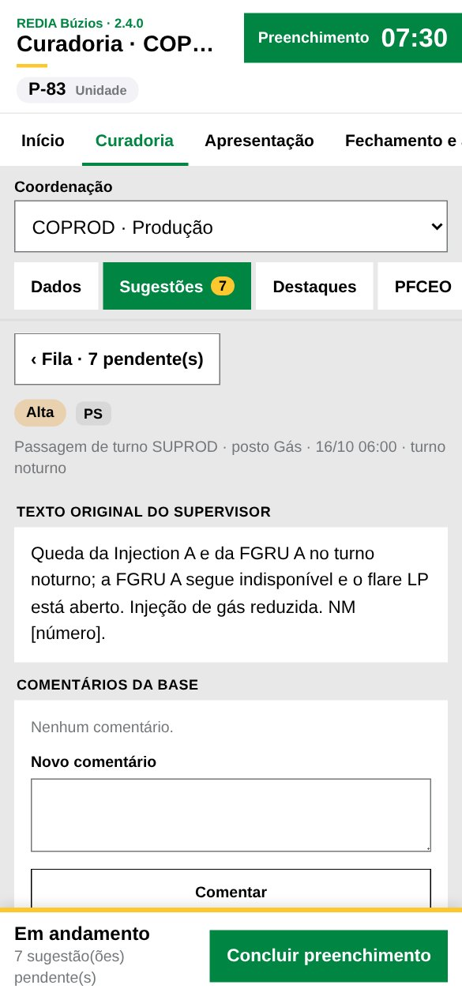
Editor e "Concluir preenchimento" fixo- Se o GEPLAT ou um coordenador precisar ir à área no início do dia, adianta a curadoria no aparelho.
- Telas de acesso, Início e curadoria adaptadas: abas roláveis, fila e editor em tela cheia, botões grandes para o toque.
- O aparelho acessa o mesmo site e a mesma base. O que é gravado aparece para todos em segundos.
Por dentro da versão web
Site estático + base de dados na nuvem
Navegadores
PC de bordo e da base, tablet, celular e as TVs da reunião via Teams
Site da REDIA
Página inicial, app e este deck · GitHub Pages no piloto ou servidor interno da TIC (HTTPS)
Arquivos estáticos: sem servidor de aplicação
Login
Chave + senha pessoal
PostgreSQL
Registros só de acréscimo, separados por UEP
Arquivos
Pauta congelada, ata, transcrição
Tempo real
Avisa todos quando alguém grava
Nada se apaga. Uma correção é um registro novo; o histórico fica completo.
O servidor carimba quem gravou e a hora oficial. O navegador não decide.
Portável: o mesmo app roda com o Supabase em nuvem ou instalado na rede da Petrobras.
Acesso e segurança
Cada um entra com a própria chave
- Chave Petrobras + senha pessoal. A senha temporária é trocada no primeiro acesso.
- Perfil cadastrado pelo administrador: nome, posto, coordenação e UEP. Sem perfil, ninguém lê nem grava.
- Cada UEP só vê os próprios dados. A regra está na base, não só na tela.
- Configuração da UEP e reset da demonstração só pelo GEPLAT ou pelo administrador.
- Nenhuma lista de pessoas no código. A chave secreta da base nunca vai para o site.
- Dados reais só após aprovação da TIC/SI. No piloto, só dados de exemplo.
Piloto
Como testar agora
1 · Na página inicial, clique em Entrar no app ›
2 · Entre com a sua chave ou com a conta genérica do seu posto (senha com o administrador). Esqueceu? Use Esqueci a senha.
3 · O administrador carrega os dados de exemplo no Início; Resetar demonstração apaga o que foi testado.
4 · Em cada coordenação: Capturar dados, curadoria, PFCEO, serviços e conclusão; depois congelamento, apresentação e ata.
Todos trabalham na mesma base, em tempo real. Sem a base configurada, o app abre em modo demonstração (chaves GP01, CP01, CE01, CM01 · senha 1234), com os dados só no navegador.
- A tela da coordenação é lida de longe em segundos?
- A curadoria cabe até 08:10 sem retrabalho?
- Falta algum dado, indicador ou fonte?
- Funciona no seu aparelho e no Teams?
Registre problemas e sugestões nas Issues do repositório, sem dados reais, nomes ou senhas.
Situação
Onde estamos e o que falta
- Fluxo completo: coleta, curadoria, apresentação, congelamento e ata
- Captura com um clique por bloco (simulada até liberar as integrações)
- Ata em PDF com o print das telas
- Versão web com base de dados, login e tempo real
- Mais de 330 verificações automáticas aprovadas
- Aprovação da base de dados e da hospedagem interna
- Login corporativo (Microsoft)
- Backup, retenção e LGPD
- Rede de bordo liberada para o site e a base
- Conectores reais: SITOP, BDO, PFCEO, APLAT, eplab e passagem de serviço
- Análises e equipamentos definidos por coordenação
- Modo pré-operação (comissionamento)
- Outras UEPs de Búzios